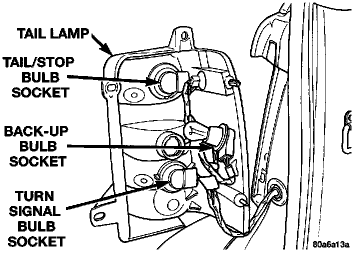

Brake Light Bulb: Service and Repair
The stop, turn signal, back-up and rear side marker lamp bulbs are incorporated into the tail lamp.REMOVAL
1. Remove tail lamp.
2. Grasp bulb socket and rotate counter clockwise. Separate socket from lamp.
Tail Lamp Bulbs:

3. Pull bulb from socket.
INSTALLATION
1. Position bulb in socket and push into place.
2. Position bulb socket in lamp and rotate clockwise.
3. Install lamp.